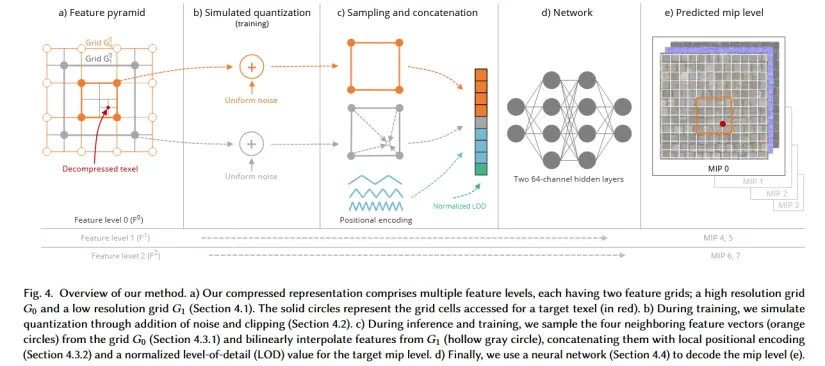
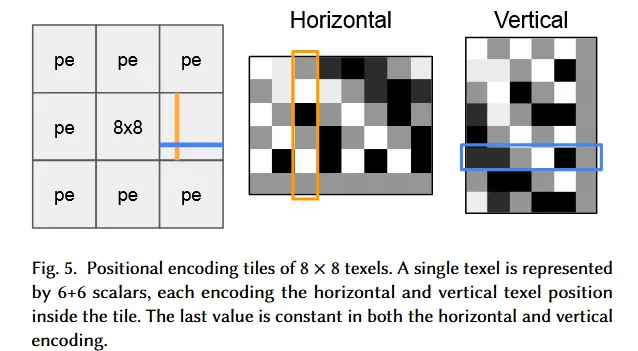
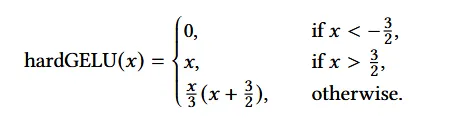
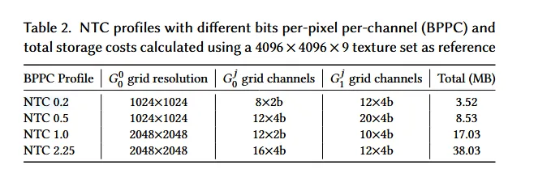
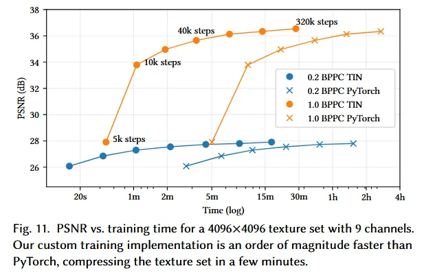
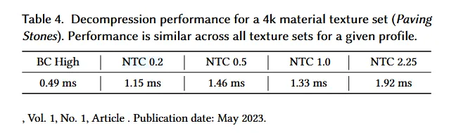
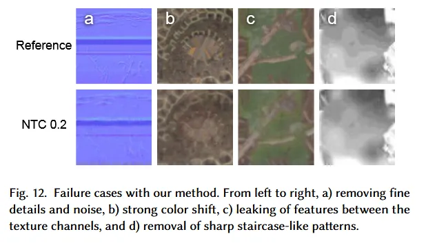

纹理压缩方法
- Block-based method：传统的纹理压缩方法，将整个纹理按照如4x4或8x8划分（Block），然后对每一个Block进行压缩。相关方法有：S3TC(D3D), PVRTC(IOS), ETC(OpenGL), ASTC(ARM GPU&Apple GPU)等。优点是这种分块思想契合GPU计算方式，缺点是压缩能力有限（压缩率与通道数限制）。
- meta-compression：较新的纹理压缩方法，基本思路为提取纹理特征，并利用这些特征提高纹理的压缩率。但缺点是GPU不直接支持对这种纹理压缩的随机采样，需要先进行格式转换。
NTC

- Representation：整个texture set表示为[w,h,c]的tensor，无需为每个通道指定语义（即每个通道代表normal，还是diffuse color等），并为每个material单独训练一个网络。唯一的assumption是统一的w和和
- Feature pyramid：用于采样Feature的结构，不同Feature level对应不同的mipmap等级
- **Grid：**每个Feature level包含两个Grid，G0存储高频特征，G1存储低频特征，可以理解为两个shape为[1,c,w,h]的tensor
**Simulated quantization:**训练过程中前大半部分会给Grid加上一个uniform noise来模拟quantization的情况（说法比较抽象），实际实现过程就是给相应Grid加上一个范围在$ [-\frac{Q_k}{2},\frac{Q_k}{2}] $的uniform noise，其中$ Q_k $和quantization相关的变量有对应关系如下：
$$
Q_k = \frac{1}{N_k},N_k = 2^{B_k}
$$
所以实际上变量只有$ B_k $，具体这些变量什么意思会在后面进行解释
**Sampling and Concatenation:**这一步进行Feature的采样以及拼接，作为网络的输入
- **Feature interpolation:**我们假设现在要采样一个分辨率为1080x1080（LOD0），坐标在(256,256)的texel，我们首先通过上面的Table 1定位到Feature level 0，可以看到其G0为256x256, G1为128x128, 因此我们需要进行upsample。
- 对G0，我们进行learned interpolate（不知道为什么叫这个名字），即取包围目标位置周围的4个feature点，过程类似(256,256)/(1080,1080)=（0.237，0.237），（0.237，0.237）x（256，256）= （60，60），所以取G0中坐标在（60，60），（60，61），（61，60），（61，61）的4个feature点（参照Fig4 流程图）
- 对G1，我们直接对（0.237，0.237）这个位置在G1上进行bilinear interpolate，获得对应feature点
- **Tiled positional encoding:**为了更好保存高频信息，拼接部分还需要目标texel的positional encoding，文章这部分没有讲的很详细，通过其他人的代码复现大致的流程如下：
- 假如我们需要编码坐标（250，250），那么我们首先将坐标映射的8x8的tiling中，即（250%8，250%8） = （2,2）,然后我们有一个encoding对应的表，大小为（6x8），以坐标值作为index取对应的列就是获得一个6+6的向量就是这个位置对应的positional encoding，下图清楚的展示了这个过程
- 这个encoding表的生成利用了三角循环函数:$ tri(x) = 2 \times ((x-offset)%2-1)-1 $，即Fig4中所展示的这个样子
- 通过调整输入序列x的频率与offset就能获得如上不同的采样序列
- 上面的6x8的序列即通过将arange(0,8)的序列分别乘以$ 2^{octave} $,从而获得不同频率的输入，octave={0，1，2}，而对于每个octave，我们用offset={0,0.5}分别输入tri(x)来获得一条编码序列，同时排除octave=0，offset=0.5的这条序列，并在最后添加一条全为0的序列，至此我们获得了6条长度为8的序列，构成encoding表。
- 最后再拼接一个normalized的LOD值，获得我们的完整输入：4 feature point(G0)+1 feature point(G1) + 12 （positional encoding）+ 1（normalized LOD）
Network
- 网络相对比较简单，就是一个包含两个维度为64的hidden layer的MLP，最后一层的输出没有激活函数，其他3层使用其定义的叫hardGELU的函数  **Training & inference** - 训练使用gradient descent和Adam，loss函数结合L2和1-SSIM。对于loss函数文章并没有给出一个绝对的答案，loss影响color fidelity和高频信息之间的权衡，可以自行选择。训练使用8 batch，大小为256x256的texel crop，每个batch使用同一个LOD，每次95%的概率从特定概率采样，5%概率从mip level chain均匀采样
1 | def sample_lod(lod_list, p=0.05): |
- 对于feature level中的各个grid使用初始liearning rate0.01，对于mlp network则为0.005，并且使用cosine annealing使二者最后均趋于0
- **Filter：**推理完成后会获得指定的texel块，但是训练过程会对离散的单个像素点进行过拟合，而对于像素点之间的部分以及mip level之间的部分可能无法很好拟合，因此文中不适用传统的gpu texture filter（trilinear）而是通过给目标坐标（u，v）在x和y方向上添加噪声，再使用最近邻准则挑选像素作为最终的采样值。这种filter方法会产生噪声，但是现有的去噪后处理能够处理。
- Evaluation
- Storage 
- Training Speed 
- Decompression Speed  **Results in Table 4 indicate that** rendering with NTC **via stochastic filtering (see Section 5.3) **costs between 1.15 ms and 1.92 ms on a NVIDIA RTX 4090**, while the **cost decreases to 0.49 ms with traditional trilinear filtered BC7 textures**. The performance is similar for all materials in our evaluation set, and independent of the output channel count, ranging from three to twelve. We also implemented **trilinear filtering for NTC **by decompressing and filtering together eight texels and observed an **8× slowdown**.
- Ristrictions
- Failure cases 
- 方法要求各个通道之间有严格的对齐，否则会出现影响所有texture的artifact
- 方法要求所有的纹理大小一致，但artist可能对于视觉效果不突出的纹理使用更低的分辨率
- 对于近处高分辨率纹理能够获得比传统压缩算法更多的细节（更多的mipmap level），但是对于远处的景物这一优势变得不再明显
- 方法对于多通道材质（多张纹理贴图）有更好的压缩效果（相同纹理质量更低的存储占用），但是对于简单材质（仅有rgb贴图）则几乎没有什么优势
- 每次解压纹理需要使用所有的通道，但对于一些仅使用个别纹理的pass，这种方法或许不如传统方法高效
- stochastic filter会增加帧重建的负担，文章提出有可能直接在latent representation上做filter
- 无法利用硬件的anistropic filtering（各项异性采样），软件实现难以做到实时
- MMA acceleration
- 一个比较有意思的地方是cuda中的shared_memory在ray-tracing shaders中并不能使用，原先可以将网络的输入（即到concatentate出来的部分）写入shared mem然后load到register再用tensor core调用相应intrinsic计算，但这里在图形管线中做不到。于是作者修改了D3D的编译器，也就是直接在给NVVM的IR中调用相应指令。同时文章指出vulkan的扩展NV_cooperative_matrix extension支持直接访问每个simd lane的matrix元素，KHR_shader_subgroup extension能够执行simd wide shuffle，并且PTX ISA中给出了每个simd lane和矩阵行列的对应关系。（算是给出了一个在vulkan中调用tensor core的思路吧）